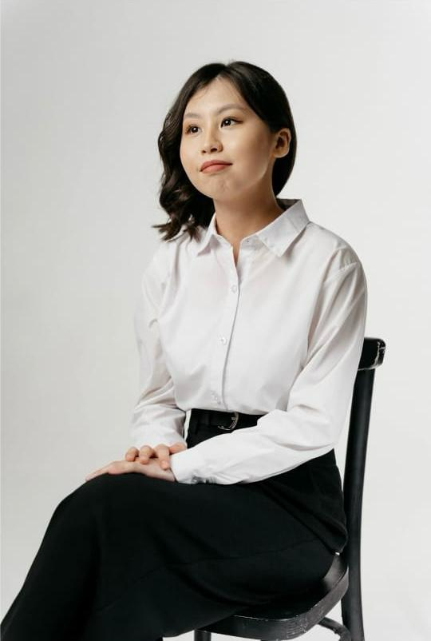

about me
My name is Dukenbay Arailym, and this is my portfolio. I’m a high-performing, fast-learning professional with a strong drive to deliver results and constantly improve. Whether I’m diving into something new or refining my existing skills, I adapt quickly, think critically, and bring a sharp focus to every challenge I take on. This portfolio showcases a mix of work that reflects not only what I’ve done, but how I approach problems, pick things up fast, and consistently push for quality. I thrive in dynamic environments, love learning on the go, and pride myself on being someone you can count on to get things done — and done well. Thanks for stopping by! Feel free to explore, and don’t hesitate to reach out if you’d like to connect
my projects
A patisserie website – A clean, elegant frontend design that highlights products, showcases the brand's identity, and provides a smooth user experience. This project allowed me to focus on visual design, responsive layouts, and intuitive navigation.
A historical person showcase website – A more content-focused project where I presented the life, achievements, and timeline of a notable historical figure. It involved organizing information clearly, using engaging visuals, and maintaining a consistent layout throughout.